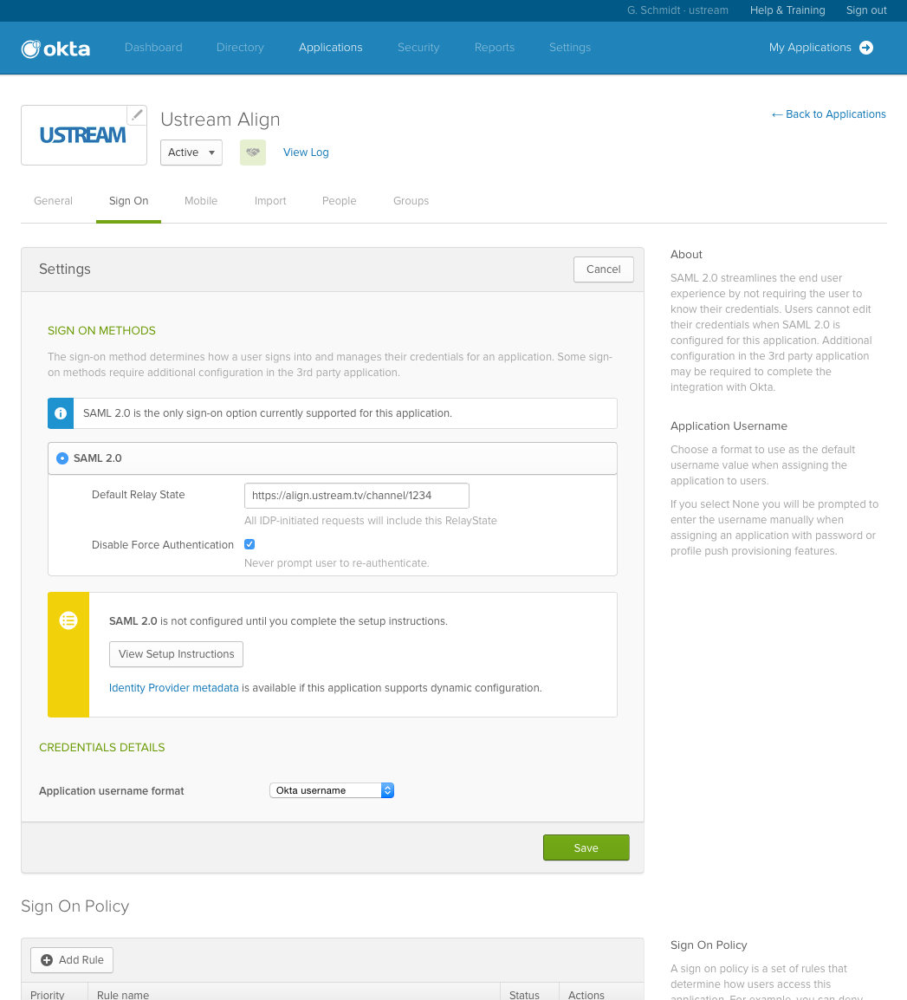

This document helps you connecting Okta and Ustream Align to have SAML based SSO. It assumes that you already have a Okta and Ustream Align account so it doesn't cover the account registrations.
Login to your Okta account
Go to the Admin panel
Go to Applications > Add application
Search for Ustream Align
After the General settings and Assigning the application to people at the end of the wizard go to the Ustream Align app settings > Sign on tab and Edit it.
Add your channel url as a Default Relay State: https://align.ustream.tv/channel/[YOUR CHANNEL ID]
